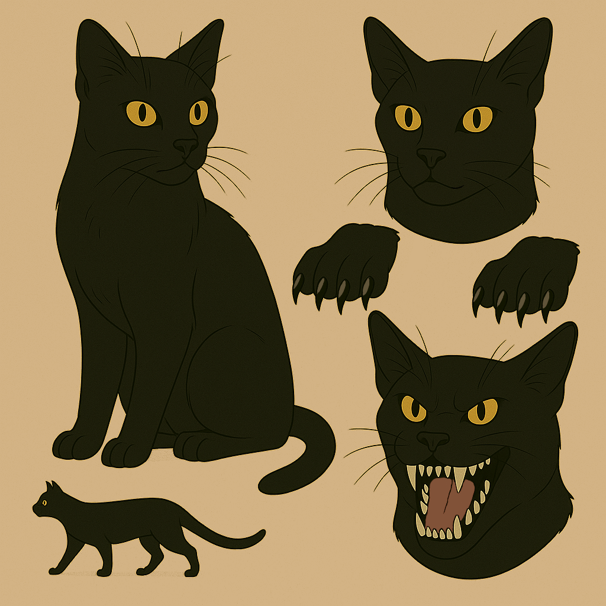

Max

Character Sheet
Role: Demon cat exiled to Earth
Personality: Mischievous, lazy, but surprisingly compassionate at times
Abilities: Telepathy, telekinesis, sharp claws, and teeth
Emotion Sheet
Smug: Shows his typical cocky attitude, eyes narrow with a satisfied grin.
Anger: His fur stands up, eyes burn with fiery rage.

Action Sheet
Curling up: Max lazily curls into a ball, resting comfortably.
Plotting: Max’s body tenses, eyes gleaming as he schemes his next move.
Ludo
Character Sheet
Role: Devil friend of Max
Personality: Mischievous, prankster, often appears as a child

Emotion Sheet
Annoyance: Ludo crosses his arms and rolls his eyes, his face a mix of frustration and amusement.
Action Sheet
Pranking: Ludo often adopts a sneaky posture, preparing to play his next trick.